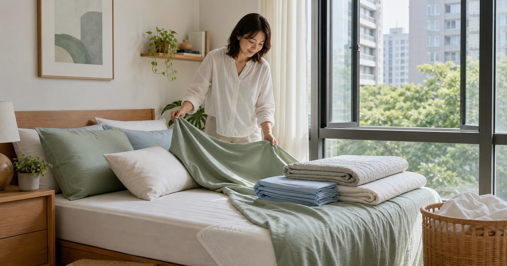

床包不是看花色而已：天絲、純棉、涼被與保潔墊的換季順序
換季寢具先看床墊尺寸、材質觸感、清洗頻率和收納空間，再決定花色。

床包不是只看花色。真正影響日常的是材質觸感、床墊尺寸、清洗頻率和收納空間。換季時先把這些條件整理好，再看顏色和風格，臥室會更容易維持乾淨，也不會買到漂亮但難照顧的寢具。
先確認床墊尺寸和厚度
床包最常買錯的原因，是只看單人、雙人或加大，卻忘了床墊厚度。若床墊較厚、加了保潔墊或薄墊，床包包覆深度就會影響是否容易鬆脫。
買之前先量長、寬、高，再看商品頁尺寸。這一步比挑花色更重要，因為尺寸不對的床包，每次整理床都會讓人煩躁。
換季時也要看洗衣條件。家中如果沒有烘衣設備，厚重被品就要更重視晾乾時間和收納空間。
- 量床墊長寬高。
- 確認是否有加薄墊或保潔墊。
- 看床包可包覆高度。
材質要對應季節與清洗習慣
天絲、純棉、涼感或磨毛材質，各有不同觸感與維護方式。容易流汗、家中有孩子或寵物、洗衣頻率高的人，更要把清洗和乾燥速度放在花色前面。
涼被也不必一次買很多條。先確認夏季是否需要冷氣房、午睡、客用或旅行備用，再決定厚薄和收納方式。
枕頭和枕套的搭配也會影響整潔感。枕套若太鬆或太緊，即使花色漂亮，床面也容易看起來凌亂。
- 夏季：透氣、好洗、快乾優先。
- 冷氣房：留意涼被厚薄。
- 客用：收納體積和清潔頻率優先。
Elite 嚴選
保潔墊是維護，不是裝飾
保潔墊的重點是延長床墊日常維護的彈性，不是用來改變睡眠品質。選擇時要看包覆方式、清洗方式、是否容易悶熱，以及和床包是否能一起固定。
Arvo Home、久賴家居、夢露家居、宜室家居與日創家居，可以從床包、被套、涼被、枕套與保潔墊方向參考；材質、尺寸和洗滌方式請以商品頁標示為準。
如果臥室濕氣重，寢具數量更不宜過多。少量輪替、完全乾燥後再收納，會比囤滿整櫃更實際。
枕套和床包可以先同色系
臥室要看起來安定，不一定要全套同花色。先選一個主色，再讓枕套、床包和涼被維持相近色階，房間會比混搭很多圖案更清爽。
如果家裡收納有限，建議每張床先準備兩組床包枕套輪替，再依季節補一條涼被或薄被。數量少但輪替清楚，會比堆滿櫃子更好維護。
- 一組使用，一組清洗輪替。
- 枕套可多備一組。
- 換季前先清點舊寢具。
收納前先確認完全乾燥
寢具收納最怕濕氣。換季前務必確認完全乾燥，再用透氣收納袋或固定櫃位保存，避免隔季拿出來才發現異味或泛黃。
本文不宣稱任何寢具能改善睡眠或健康狀況；選購應回到材質、尺寸、清潔與個人觸感偏好。
同主題品牌參考
FAQ
這篇文章適合直接照單購買嗎？
不建議。每個家庭、通勤路線、身形、膚況或空間條件都不同，請先用文中的順序盤點自己的使用情境，再回到商品頁確認規格。
商品價格、活動或庫存可以以本文為準嗎？
不可以。價格、活動、庫存、規格、尺寸與配送條件都可能變動，請以下單前看到的商品頁或店家頁公告為準。
涉及保養、照護、兒童或健康用品時要注意什麼？
請把本文視為一般生活整理與選購情境參考；若涉及健康、照護、皮膚、兒童食用或輔具使用，應優先看商品標示並諮詢合格專業人員。
下一步建議
先量床墊、整理清洗頻率，再依季節挑床包、涼被與保潔墊。
重要警語
本文僅供一般居家整理與選購參考，不宣稱寢具能改善睡眠或健康；商品材質、尺寸與洗滌方式請以商品頁公告為準。
本文含品牌／商品導購連結；若你透過部分商品連結前往選購，Elite Fashion 可能取得合作收益。本文仍以編輯判斷與使用情境整理為主，價格、規格、活動與庫存請以商品頁公告為準。